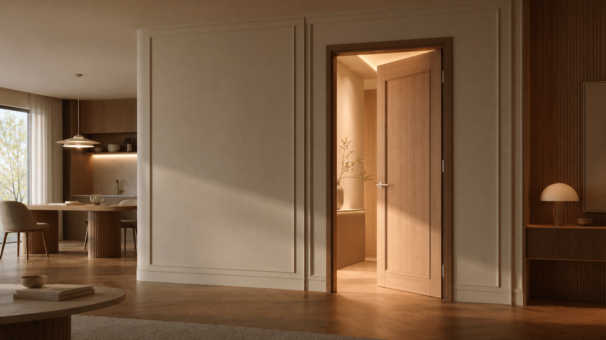
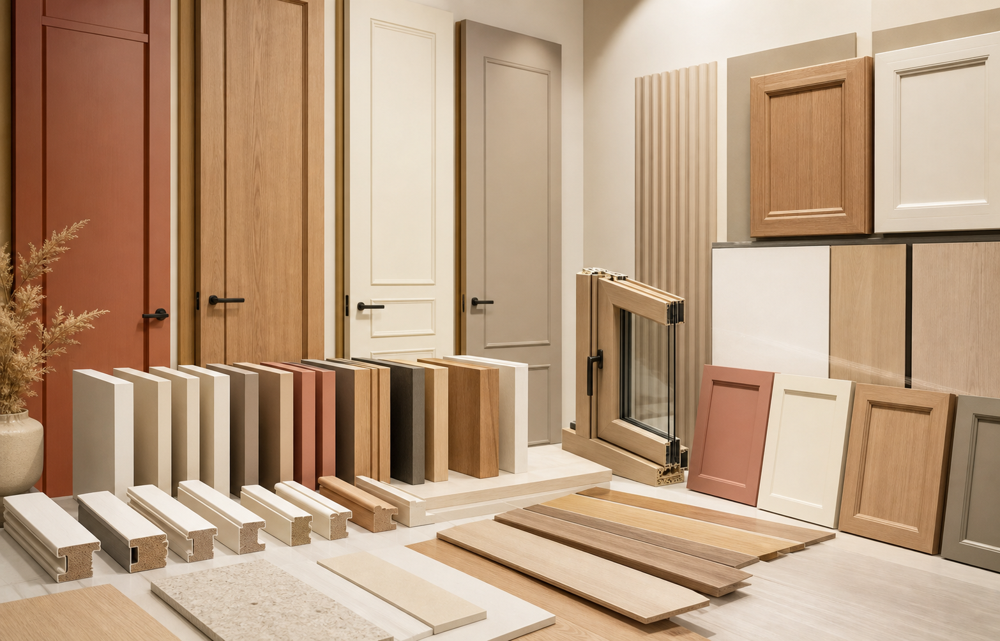
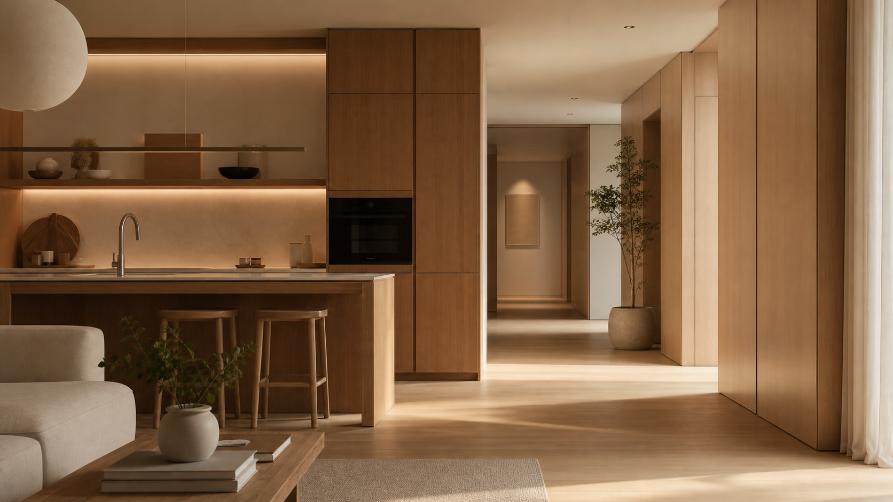
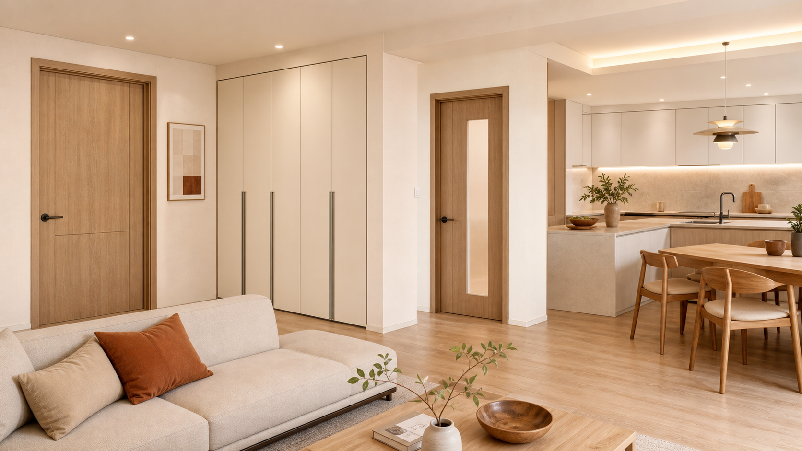

따뜻한 우드톤
거실, 주방, 침실의 가구 톤까지 이어지는 컬러와 결을 제안합니다.

거실, 주방, 침실의 가구 톤까지 이어지는 컬러와 결을 제안합니다.
문틀, 몰딩, 붙박이장, 창호까지 한 번에 맞춰 완성도를 높입니다.
실제 샘플과 시공 사례를 기준으로 우리 집에 맞는 조합을 찾습니다.

무광, 우드, 포인트 컬러까지 공간 톤에 맞춰 설계합니다.
작은 선의 두께와 그림자를 조절해 고급스러운 벽면을 만듭니다.
문짝과 가구 마감을 함께 맞춰 분리감 없는 공간을 완성합니다.
마감재의 질감과 하드웨어까지 한 번에 코디네이션합니다.

시공 후에도 문이 닫히는 느낌, 손잡이의 흔들림, 마감 상태까지 끝까지 확인합니다.
평면도보다 중요한 건 실제 벽과 바닥의 상태입니다. 오래된 현장 경험으로 오차를 줄입니다.
상담, 제작, 출고, 시공을 분리하지 않아 색상과 일정, 품질을 안정적으로 관리합니다.
화면 속 예쁜 이미지가 아니라 실제 샘플의 결, 두께, 광택을 보고 결정합니다.
방문, 몰딩, 붙박이장, 주방, 창호를 따로 고르지 않아 전체 톤이 흐트러지지 않습니다.

기존 마감의 단차를 보정하고, 몰딩 두께를 줄여 더 넓어 보이는 복도를 만들었습니다.
무작정 같은 색이 아니라 빛이 닿는 면마다 다르게 보이는 톤을 맞췄습니다.
평면, 현장 사진, 원하는 무드를 공유합니다.
도어·몰딩·가구·바닥재 후보를 팔레트로 정리합니다.
현장 오차를 반영해 제작 사이즈와 마감 디테일을 확정합니다.
출고, 설치, 마감 점검, A/S 기준까지 안내합니다.